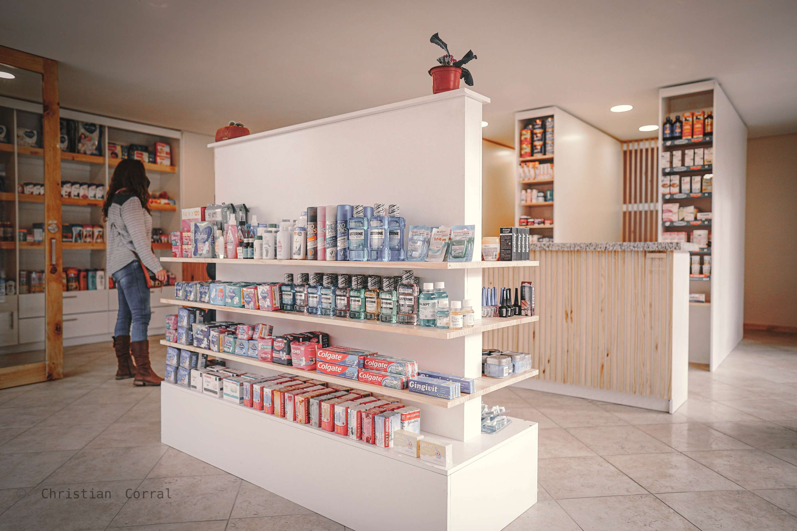
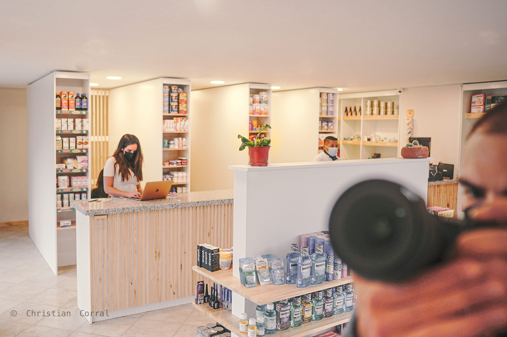
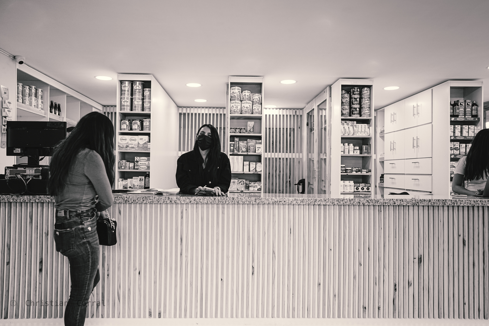

Farmacia Las Morlaquitas — Neighbourhood care with honest materials.
A corner pharmacy in Cuenca that combines commercial efficiency with an architectural presence rooted in local craftsmanship and climate-responsive design.
Project Overview
Farmacia Las Morlaquitas is a neighbourhood pharmacy located in Cuenca, Ecuador. The project combines commercial utility with architectural identity, enhancing its urban corner through material clarity and openness. It provides efficient pharmaceutical services while also acting as a local reference point for community life.
- Typology: Commercial refurbishment
- Location: Cuenca, Ecuador
- Status: Built
- Year: 2019

Design Approach
The design balances transparency and enclosure. Glass surfaces connect the pharmacy to the street, while brick and concrete walls provide robustness and climatic comfort. The architectural character is simple yet expressive, emphasising honesty of materials and integration into the local urban fabric.





Credits
Project by Proyectual Studio with the collaboration of local craftspeople and health professionals in Cuenca. The refurbishment spotlights simple resources, careful detailing, and a community-driven programme.